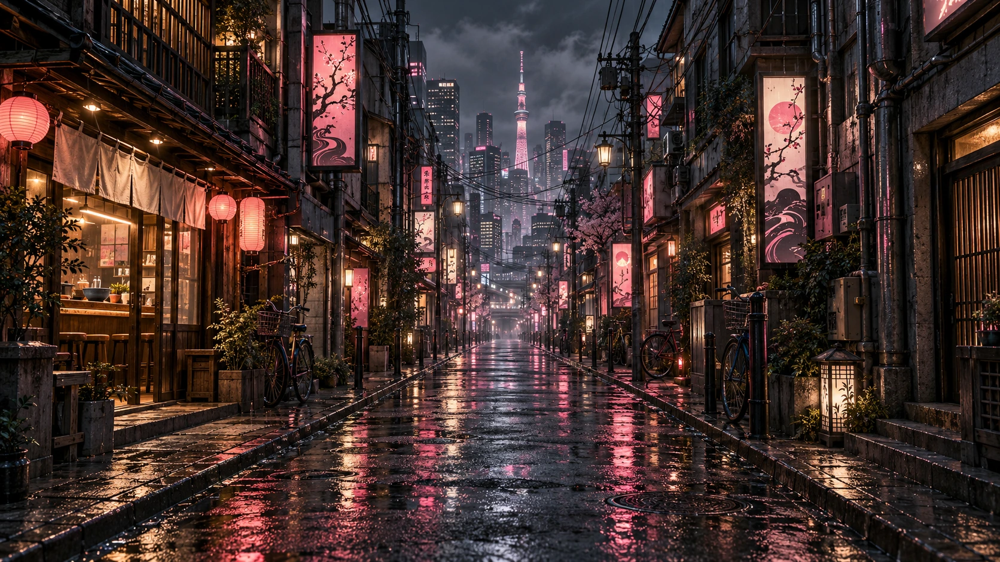

TOKYO. FIRST TIME?
TAKE THE
LONG WAY IN.
The places you remember aren’t always on the itinerary.
A DIFFERENT WAY IN.

TOKYO. FIRST TIME?
The places you remember aren’t always on the itinerary.
ONE EVENING EARLIER
Then the city had a better idea.
MAKE ROOM FOR A DETOUR
Start with a feeling. Follow the warm lights.
ONE STOP PAST THE OBVIOUS
A window seat is a perfectly good beginning.
YOU FOLLOWED THE WARM LIGHT
The best table wasn’t the one you booked.
THIS IS THE PART YOU TAKE HOME
Go somewhere. Let somewhere change you.
NO TWO NIGHTS THE SAME / 02
Start with a feeling.
See where it takes you.
THE GOOD PART IS THE JOURNEY / 03
An original travel website concept.
Designed & built by Hemal Herath.